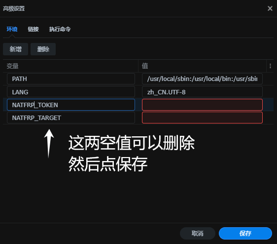

群晖-内网穿透
这里对无外部网络访问的情况下，进行内网穿透的方法操作参考
简单说一下内网穿透的原理：
（图）
樱花Frp
创建隧道

配置文件
创建隧道后，点击这个配置文件
复制这串内容。这个在后面群晖NAS里做内网穿透有用。
Docker安装
低版本的群晖NAS可能没有樱花Frp等套件，这里可以使用Docker安装的方式。在套件中间找到Docker并下载
拉取Frp镜像
可以借助Putty工具，使用Shell命令行方式进行拉取。在使用群晖NAS的终端服务时，您还需把终端服务器的端口启用。
在其他平台电脑，例如window电脑，安装Putty工具。打开并输入NAS的IP及终端端口22
输入NAS用户名，再输入密码，注意：输入密码时是不会显示内容的，输入后按回车即可，进到如下界面就是成功了
再输入“sudo -i”回车，再输入密码，进入root权限。
1 | sudo -i |
输入拉取镜像，回车即可
1 | docker pull docker.1ms.run/natfrp/frpc |
创建容器
拉取镜像后，可以在Docker镜像里看到，并且选择该镜像进行启动，创建容器。
默认网络即可
进入高级设置，把网址的配置文件复制，粘贴在容器的高级设置里的执行命令里。
如果遇到空值错误，直接删除这两项即可
下一步
下一步
下一步
查看容器
在日志里，穿透成功后，可以看到有连接的网址或IP的提示，在浏览器输入该IP地址，即可在外网访问NAS。